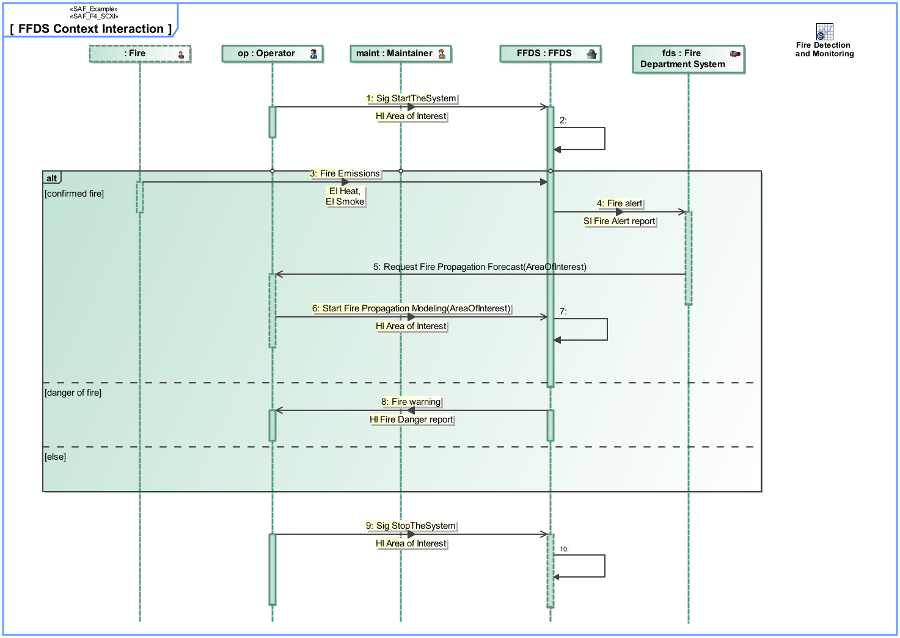
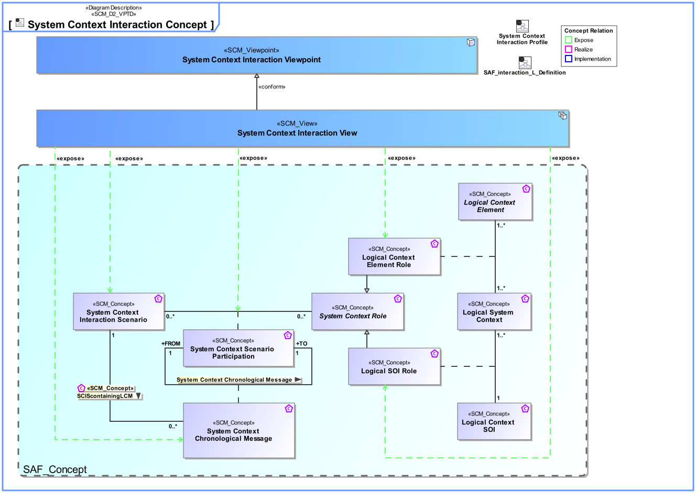
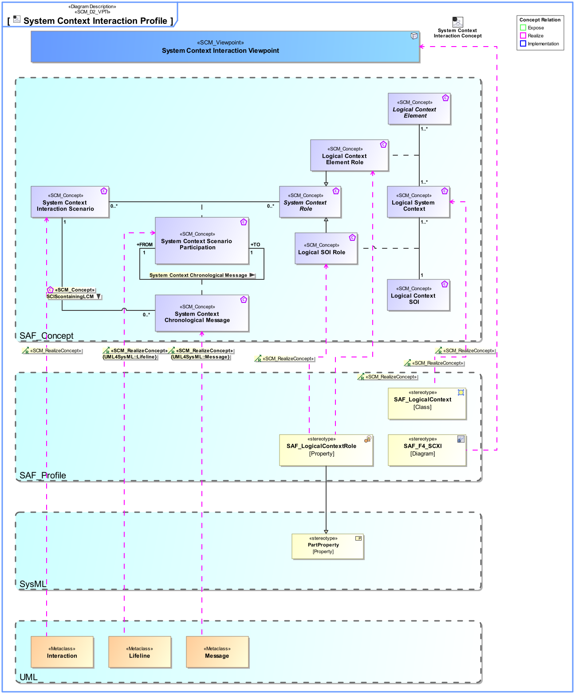

F4_SCXI System Context Interaction Viewpoint
| Domain | Aspect | Maturity |
|---|---|---|
| Functional | Interaction & Collaboration |

The System Context Interaction Viewpoint describes the System external behavior based on the exchange between Logical SOI and Logical Context Elements Usage in a given System Context. It depicts the sequence of interactions between the Logical SOI, the Context Elements and the exchanged Domain Item Kinds needed to accomplish a given System Process. Note: The System Context Interaction Viewpoint may refine a System Use Case.
The System Context Interaction Viewpoint supports the “prepare for requirement definition” activity part of the “System Requirements Definition Process” activities of the INCOSE SYSTEMS ENGINEERING HANDBOOK 2015 [§ 4.3] and contributes to the identification of expected interactions with systems external to the SOI.
A sequence diagram featuring the flow of control between SOI and Context Elements Roles of a System Context to achieve one outcome of a System Use Case. Note: This diagram depicts the sending and receiving of messages between the interacting entities called lifelines, where time is represented along the vertical axis. The lifelines representatives are part properties typed by a System Context Elements.
The following Stereotypes / Model Elements are used in the Viewpoint:
The Diagram shows the concepts exposed by the viewpoint, and related concepts if necessary.

| Concept | Documentation |
|---|---|
| Logical Context Element Role | Specifies the fact that a Logical Context Element exists in a given Logical System Context. |
| Logical SOI Role | Specifies the fact that a Logical Context SOI exists in a given Logical System Context. |
| System Context Chronological Message | Ordered sequential occurrence of exchanges between System Context Interaction Scenario Participants. |
| System Context Interaction Scenario | Ordered sequence of exchanges of information, energy, or material between System Context Interaction Scenario Participants. |
| System Context Scenario Participation | Specifies the fact that a System Context Role participates in a System Context Interaction Scenario. |
The Diagram shows the implementation of exposed concepts.
